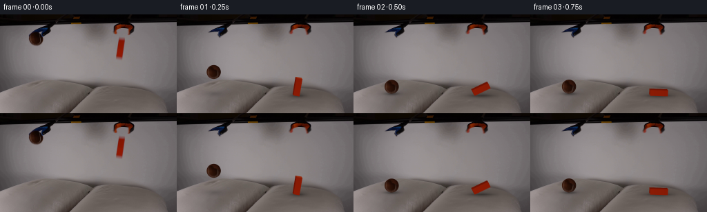
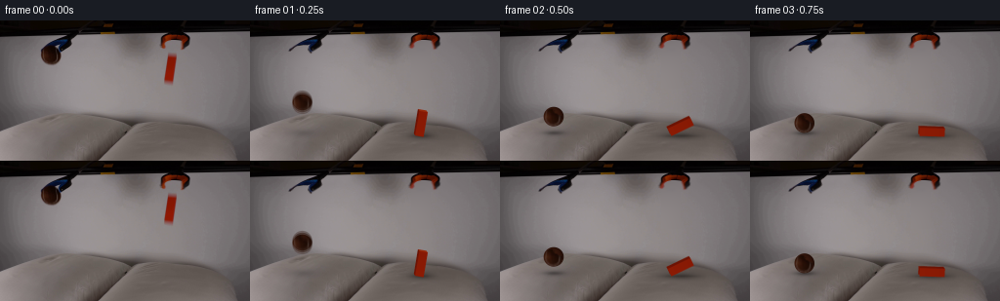

CODING AGENTS AS PIXEL WORLD MODELS
traex/GPT-6-Astra · 0003
点击播放 · 原生 RGB 像素
逐轮保存的候选
回放视频、检查图与代码变化。
每份候选均可单独播放。实际图片检查记录在下方工具轨迹中。
候选 01播放与检查图
点击播放 · 原生 RGB 像素

展开代码变化
--- 上一保存版本
+++ 本次保存版本
@@ -0,0 +1,232 @@
+from pathlib import Path
+import math
+import numpy as np
+import cv2
+from PIL import Image, ImageDraw
+from scipy.ndimage import gaussian_filter, map_coordinates, distance_transform_edt
+from artifact_io import save
+
+ROOT=Path(__file__).resolve().parent
+W,H=256,144
+I=np.asarray(Image.open(ROOT/'first_frame.png').convert('RGB'),dtype=np.float32)
+Y,X=np.mgrid[:H,:W].astype(np.float32)
+S=4
+
+def background_fit(box, degree=3):
+ x0,y0,x1,y1=box
+ xx=(X-x0)/(x1-x0); yy=(Y-y0)/(y1-y0)
+ terms=np.stack([xx**i*yy**j for i in range(degree+1) for j in range(degree+1-i)],axis=2)
+ m=(X>=x0)&(X<x1)&(Y>=y0)&(Y<y1)&(I[:,:,0]>90)&(abs(I[:,:,0]-I[:,:,1])<13)&(abs(I[:,:,1]-I[:,:,2])<7)
+ for _ in range(5):
+ coef=np.linalg.lstsq(terms[m],I[m],rcond=None)[0]
+ pred=terms@coef
+ m &= np.max(abs(pred-I),axis=2)<3
+ return pred.astype(np.float32)
+
+leftbg=background_fit((30,17,86,57))
+rightbg=background_fit((155,22,202,78))
+# Fill only the silhouettes which will become uncovered. These regions are on
+# the smooth, out-of-focus backdrop; the table and fabric are left untouched.
+base=I.copy()
+leftregion=(X>=39)&(X<=73)&(Y>=23)&(Y<=47)
+rightregion=(X>=161)&(X<=195)&(Y>=21)&(Y<=31)
+blockregion=(X>=165)&(X<=184)&(Y>=32)&(Y<=69)
+base[leftregion]=leftbg[leftregion]
+base[rightregion|blockregion]=rightbg[rightregion|blockregion]
+
+# Source-image grabber jaws, with the lower fingers articulated slightly apart.
+def polygon_mask(points):
+ p=Image.new('L',(W*S,H*S),0)
+ ImageDraw.Draw(p).polygon([(round(x*S),round(y*S)) for x,y in points],fill=255)
+ return np.asarray(p.resize((W,H),Image.Resampling.LANCZOS),dtype=np.float32)/255
+
+leftshape=polygon_mask([(39,23),(74,23),(74,29),(65,33),(61,34),(59,30),(59.5,27),(58,25),(55,25),(49,26.1),(45.5,26)])
+leftalpha=np.clip((leftbg.mean(2)-I.mean(2))/(leftbg.mean(2)-22),0,1)*leftshape
+leftalpha[(Y<23)|(Y>35)|(X<39)|(X>74)]=0
+rightalpha=np.clip((rightbg.mean(2)-I.mean(2))/(rightbg.mean(2)-39),0,1)
+rightalpha[~rightregion]=0
+# Restore exact RGB rather than keeping light background fringes in a cutout.
+leftprem=I-leftbg*(1-leftalpha[:,:,None]); leftprem*=leftalpha[:,:,None]>0
+rightprem=I-rightbg*(1-rightalpha[:,:,None]); rightprem*=rightalpha[:,:,None]>0
+leftprem=np.clip(leftprem,0,255);rightprem=np.clip(rightprem,0,255)
+
+def jaws(canvas,t):
+ opened=1-math.exp(-t/0.065)
+ # Smooth inverse warps leave the attachment points stationary.
+ f=np.clip((Y-23)/9,0,1)
+ xs=X-(X-56)*.17*f*opened
+ ys=Y+.55*f*opened
+ a=cv2.remap(leftalpha,xs,ys,cv2.INTER_LINEAR,borderMode=cv2.BORDER_CONSTANT)
+ p=cv2.remap(leftprem,xs,ys,cv2.INTER_LINEAR,borderMode=cv2.BORDER_CONSTANT)
+ canvas=canvas*(1-a[:,:,None])+p
+ f=np.clip((Y-21)/8,0,1)
+ xs=X-np.tanh((X-176)/4)*2.5*f*opened
+ ys=Y+.35*f*opened
+ a=cv2.remap(rightalpha,xs,ys,cv2.INTER_LINEAR,borderMode=cv2.BORDER_CONSTANT)
+ p=cv2.remap(rightprem,xs,ys,cv2.INTER_LINEAR,borderMode=cv2.BORDER_CONSTANT)
+ return canvas*(1-a[:,:,None])+p
+
+# The visible felt and curved seam are sampled from the first frame; upper
+# regions hidden by the clamp are completed with a shaded, textured sphere.
+CX,CY,RX,RY=51.95,35.05,10.25,10.15
+q=((X-CX)/RX)**2+((Y-CY)/RY)**2
+edge=np.clip((1-np.sqrt(q))*min(RX,RY)/.95+.5,0,1)
+ballraw=(I-(1-edge[:,:,None])*leftbg)/np.maximum(edge[:,:,None],.06)
+valid=(q<.94**2)&(Y>27)&(I[:,:,0]-I[:,:,1]>12)&(I[:,:,1]>=I[:,:,2])&(I[:,:,0]<100)
+# Keep only actual felt, not blue tool or the backdrop seen through the jaw.
+valid &= ~((X>55)&(Y<32))
+weight=gaussian_filter(valid.astype(np.float32),.5)
+nearest=distance_transform_edt(~valid,return_distances=False,return_indices=True)
+ballfilled=ballraw[tuple(nearest)]
+ballfilled=np.clip(ballfilled,0,180)
+
+hy,hx=np.mgrid[:H*S,:W*S].astype(np.float32)
+hx=(hx+.5)/S-.5;hy=(hy+.5)/S-.5
+
+def draw_ball(canvas,cx,cy,angle=0,squash=0,light=1):
+ rx=RX*(1+.25*squash);ry=RY*(1-squash)
+ ux=(hx-cx)/rx;uy=(hy-cy)/ry
+ rho=np.sqrt(ux*ux+uy*uy)
+ alpha=np.clip((1-rho)*min(rx,ry)*S+.5,0,1)
+ co,si=math.cos(angle),math.sin(angle)
+ tx=ux*co+uy*si;ty=-ux*si+uy*co
+ sx=(CX+tx*RX).astype(np.float32);sy=(CY+ty*RY).astype(np.float32)
+ original=cv2.remap(ballfilled,sx,sy,cv2.INTER_LINEAR,borderMode=cv2.BORDER_REFLECT)
+ keep=cv2.remap(weight,sx,sy,cv2.INTER_LINEAR,borderMode=cv2.BORDER_CONSTANT)
+ z=np.sqrt(np.maximum(0,1-tx*tx-ty*ty))
+ illumination=np.clip(.25+.30*z-.20*tx+.08*ty,0,1)
+ felt=np.stack([21+65*illumination,6+33*illumination,2+20*illumination],axis=2)
+ texture=1.2*np.sin(sx*14.7+sy*23.5)*np.sin(sx*6.8-sy*8.7)
+ felt+=texture[:,:,None]
+ # Previously occluded cap, including continuation of the pale tennis seam.
+ seam=np.exp(-((tx+.76+.20*ty)**2)/.003)*np.clip((-ty-.05)*3,0,1)
+ felt+=seam[:,:,None]*np.array([20,18,13],np.float32)
+ rgb=original*keep[:,:,None]+felt*(1-keep[:,:,None])
+ rgb+=light*np.array([5.,3.,1.5])*z[:,:,None]
+ a=cv2.resize(alpha,(W,H),interpolation=cv2.INTER_AREA)
+ prem=cv2.resize(rgb*alpha[:,:,None],(W,H),interpolation=cv2.INTER_AREA)
+ return canvas*(1-a[:,:,None])+prem
+
+G=1550.
+BALL_SURFACE=114.1
+ball_contact=math.sqrt(2*(BALL_SURFACE-RY-CY)/G)
+block_contact=(-100+math.sqrt(100**2+2*G*(117.-61.3)))/G
+
+def ball_state(t):
+ if t<ball_contact:
+ return CX+4.5*t,CY+.5*G*t*t,0.,0.,0.
+ tau=t-ball_contact
+ # A pillow dissipates most of the impulse, leaving a short, low rebound.
+ vb=95.
+ duration=2*vb/G
+ if tau<duration:
+ height=vb*tau-.5*G*tau*tau
+ depression=1.8*math.exp(-tau*20)
+ else:
+ s=tau-duration
+ height=.40*math.exp(-s*13)*math.sin(20*s)
+ depression=.8+1.1*math.exp(-s*16)
+ x=CX+4.5*ball_contact+2.8*(1-math.exp(-tau*3.8))
+ y=BALL_SURFACE-RY-height+depression
+ sq=.060*math.exp(-(tau/.04)**2)+.016*math.exp(-max(0,tau-duration)*12)
+ return x,y,.21*(1-math.exp(-tau*4)),sq,max(0,depression)
+
+def block_state(t):
+ if t<block_contact:
+ return 172.7,61.3+100*t+.5*G*t*t,.14,0.
+ tau=t-block_contact
+ # Rigid block tips around its first contacting end, then damps on the fabric.
+ u=np.clip(tau/.46,0,1)
+ ease=u*u*(3-2*u)
+ theta=.14+(math.pi/2-.14)*ease
+ if tau>.46:
+ theta+=.075*math.exp(-(tau-.46)*9)*math.sin((tau-.46)*25)
+ dent=.95+1.5*math.exp(-tau*11)
+ pivoty=117.-4.25*math.sin(theta)+dent
+ return 172.7+.6*(1-math.exp(-tau*5)),pivoty,theta,dent
+
+# Render a small rigid cuboid with its source-frame orange/red exposure.
+def block_layer(px,py,theta):
+ axis=np.array([math.sin(theta),-math.cos(theta)])
+ side=np.array([math.cos(theta),math.sin(theta)])
+ pivot=np.array([px,py])
+ p0=pivot-side*4.25
+ p1=pivot+side*4.25
+ p2=p1+axis*25.5
+ p3=p0+axis*25.5
+ dep=np.array([-1.45,-2.])
+ image=Image.new('RGBA',(W*S,H*S),(0,0,0,0));d=ImageDraw.Draw(image)
+ def poly(points,color):
+ d.polygon([(int(round((p[0]+.5)*S)),int(round((p[1]+.5)*S))) for p in points],fill=tuple(color)+(255,))
+ poly([p0+dep,p1+dep,p2+dep,p3+dep],(116,22,6))
+ poly([p3,p2,p2+dep,p3+dep],(153,43,12))
+ poly([p0,p3,p3+dep,p0+dep],(108,19,4))
+ poly([p0,p1,p2,p3],(137,26,4))
+ # A faint illumination gradient and low-amplitude grain prevent a flat decal.
+ arr=np.asarray(image,dtype=np.float32)
+ local=(hx-px)*axis[0]+(hy-py)*axis[1]
+ shade=(12.75-local)/25.5*5
+ grain=.55*np.sin(hx*17.4+hy*11.1)*np.cos(hx*6.7-hy*23)
+ arr[:,:,:3]+=np.stack([shade+grain,.34*shade+.5*grain,.12*shade+.3*grain],axis=2)
+ alpha=arr[:,:,3]/255
+ return np.dstack([arr[:,:,:3]*alpha[:,:,None],alpha])
+
+def draw_block(canvas,t):
+ px,py,th,dent=block_state(t)
+ # Integrate a short real-time shutter while the block is dropping.
+ shutter=.012 if t<block_contact else .008
+ samples=[]
+ for dt in np.linspace(-shutter/2,shutter/2,3):
+ px,py,th,_=block_state(max(0,t+dt))
+ samples.append(block_layer(px,py,th))
+ lay=cv2.resize(np.mean(samples,axis=0),(W,H),interpolation=cv2.INTER_AREA)
+ return canvas*(1-lay[:,:,3,None])+lay[:,:,:3]
+
+def soft_shadow(canvas,cx,cy,rx,ry,amount):
+ shadow=np.exp(-.5*(((X-cx)/rx)**2+((Y-cy)/ry)**2))
+ return canvas*(1-amount*shadow[:,:,None])
+
+def deform_pillows(canvas,t,bx,by,bd,od):
+ # Local cloth deformation, not global camera or background movement.
+ d1=bd*np.exp(-.5*(((X-bx)/14)**2+((Y-114)/7.5)**2))
+ ox=183 if t>block_contact else 174
+ d2=od*np.exp(-.5*(((X-ox)/21)**2+((Y-115)/8)**2))
+ influence=np.clip((Y-94)/7,0,1)
+ dis=(d1+d2)*influence
+ out=cv2.remap(canvas,X,(Y-dis).astype(np.float32),cv2.INTER_LINEAR,borderMode=cv2.BORDER_REFLECT)
+ out*=1-(.028*d1+.024*d2)[:,:,None]
+ # Low relief shading follows the shallow compression of the soft padding.
+ return out
+
+def render(t):
+ bx,by,angle,sq,bd=ball_state(t)
+ px,py,theta,od=block_state(t)
+ a=deform_pillows(base.copy(),t,bx,by,bd,od)
+ a=jaws(a,t)
+ height=max(0,BALL_SURFACE-(by+RY))
+ a=soft_shadow(a,bx+1.2,115.,8+height*.075,2.0+height*.033,.30*math.exp(-height/28))
+ if t>=ball_contact:
+ a=soft_shadow(a,bx,115.+bd*.4,6.4,1.1,.16)
+ if t<block_contact:
+ height=max(0,117.-py)
+ a=soft_shadow(a,174,117,9+height*.09,2.3+height*.03,.22*math.exp(-height/24))
+ else:
+ centerx=px+12.75*math.sin(theta)
+ a=soft_shadow(a,centerx,117.7,7+7*math.sin(theta),2.5,.27)
+ a=soft_shadow(a,centerx,118.,5+7*math.sin(theta),.9,.16)
+ a=draw_ball(a,bx,by,angle,sq)
+ a=draw_block(a,t)
+ return np.clip(np.round(a),0,255).astype(np.uint8)
+
+def main():
+ frames=[I.astype(np.uint8)]
+ for i in range(1,20):
+ frames.append(render(i/4))
+ frames=np.asarray(frames,dtype=np.uint8)
+ save(frames,ROOT)
+ print('Saved',frames.shape,frames.dtype)
+ print('Contact times: ball %.3fs, block %.3fs'%(ball_contact,block_contact))
+ print('First frame identical:',np.array_equal(frames[0],np.asarray(Image.open(ROOT/'first_frame.png').convert('RGB'))))
+
+if __name__=='__main__':
+ main()
候选 02播放与检查图
点击播放 · 原生 RGB 像素


展开代码变化
--- 上一保存版本
+++ 本次保存版本
@@ -41,6 +41,8 @@
return np.asarray(p.resize((W,H),Image.Resampling.LANCZOS),dtype=np.float32)/255
leftshape=polygon_mask([(39,23),(74,23),(74,29),(65,33),(61,34),(59,30),(59.5,27),(58,25),(55,25),(49,26.1),(45.5,26)])
+lefttip=polygon_mask([(46.5,25.1),(48.2,25.8),(45.5,28.4),(43.4,31.7),(41.8,31.5),(42.1,29),(44.1,26.5)])
+leftshape=np.maximum(leftshape,lefttip)
leftalpha=np.clip((leftbg.mean(2)-I.mean(2))/(leftbg.mean(2)-22),0,1)*leftshape
leftalpha[(Y<23)|(Y>35)|(X<39)|(X>74)]=0
rightalpha=np.clip((rightbg.mean(2)-I.mean(2))/(rightbg.mean(2)-39),0,1)
@@ -117,7 +119,7 @@
return CX+4.5*t,CY+.5*G*t*t,0.,0.,0.
tau=t-ball_contact
# A pillow dissipates most of the impulse, leaving a short, low rebound.
- vb=95.
+ vb=185.
duration=2*vb/G
if tau<duration:
height=vb*tau-.5*G*tau*tau
@@ -126,7 +128,7 @@
s=tau-duration
height=.40*math.exp(-s*13)*math.sin(20*s)
depression=.8+1.1*math.exp(-s*16)
- x=CX+4.5*ball_contact+2.8*(1-math.exp(-tau*3.8))
+ x=CX+4.5*ball_contact+2.8*(1-math.exp(-tau*2.7))
y=BALL_SURFACE-RY-height+depression
sq=.060*math.exp(-(tau/.04)**2)+.016*math.exp(-max(0,tau-duration)*12)
return x,y,.21*(1-math.exp(-tau*4)),sq,max(0,depression)
@@ -214,7 +216,14 @@
centerx=px+12.75*math.sin(theta)
a=soft_shadow(a,centerx,117.7,7+7*math.sin(theta),2.5,.27)
a=soft_shadow(a,centerx,118.,5+7*math.sin(theta),.9,.16)
- a=draw_ball(a,bx,by,angle,sq)
+ if t<ball_contact:
+ moving=[]
+ for dt in [-.005,0.,.005]:
+ xx,yy,aa,ss,_=ball_state(max(0,t+dt))
+ moving.append(draw_ball(a,xx,yy,aa,ss))
+ a=np.mean(moving,axis=0)
+ else:
+ a=draw_ball(a,bx,by,angle,sq)
a=draw_block(a,t)
return np.clip(np.round(a),0,255).astype(np.uint8)
候选 03播放与检查图
可观测工具轨迹
实际执行的命令与返回图片。
命令 1exit 0
/bin/bash -lc "ls -la && cat prompt.txt && printf '\\n--- RULES ---\\n' && cat GENERATION_RULES.md"
命令 2exit 0
/bin/bash -lc "cat artifact_io.py && python - <<'PY'
from PIL import Image
import numpy as np
from collections import Counter
im=np.array(Image.open('first_frame.png').convert('RGB'))
print(im.shape)
print(Counter(map(tuple, im.reshape(-1,3)//32)).most_common(30))
a=np.array(Image.fromarray(im).resize((128,72)))
# hue/colors reduced map
for row in a:
s=''
for r,g,b in row.astype(float):
v=max(r,g,b); m=min(r,g,b)
if v-m<16:
c=' ' if v>230 else '.' if v>190 else ':' if v>150 else '-' if v>110 else '=' if v>70 else '+' if v>35 else '#'
elif r>1.2*g and g>1.25*b: c='O' if r>150 else 'b'
elif r>g*1.22 and r>b*1.22: c='R'
elif b>r*1.15 and b>g*1.1: c='B'
elif g>r*1.1 and g>b*1.1: c='G'
elif r>1.15*b and g>1.1*b: c='y'
else: c='.' if v>170 else '-' if v>85 else '#'
s+=c
print(s)
PY"命令 3exit 0
/bin/bash -lc "python - <<'PY'
import numpy as np
from PIL import Image
from scipy.ndimage import label,find_objects
im=np.array(Image.open('first_frame.png')).astype(float);r,g,b=im.transpose(2,0,1)
for name,m in [('red',(r-g>20)&(r-b>20)),('orange',(r-g>35)&(g-b>3)),('blue',(b-r>10)),('dark',np.max(im,axis=2)<40),('bright',np.min(im,axis=2)>145)]:
lab,n=label(m)
print(name)
for j,sl in enumerate(find_objects(lab)):
if sl is None:continue
n=(lab[sl]==j+1).sum()
if n>5: print(n,sl, np.round(im[lab==j+1].mean(0),1))
print('Range',im.min((0,1)),im.max((0,1)))
# range of colors in rows, orange spans
for y in range(0,144,3):
spans=[]
for m in [(r-g>20)&(r-b>20), (b-r>10),np.max(im,2)<40]:
xs=np.flatnonzero(m[y]);spans.append((xs.min(),xs.max()) if len(xs) else '-')
print(y,spans)
PY"命令 4exit 0
/bin/bash -lc "python - <<'PY'
import numpy as np
from PIL import Image,ImageFilter
im=np.array(Image.open('first_frame.png'))
y=im.mean(2)
chars=' .,:;irsXA253hMHGS#9B&@'
# Contrast normalized lum as text
for yy in range(0,144,2):
print(''.join(chars[int(np.clip((float(v)-0)/160,0,.999)*len(chars))] for v in y[yy,::2]))
print('\\nGray means 8x4')
for yy in range(0,144,4):
print('%3d'%yy+' '.join('%3d'%np.mean(y[yy:yy+4,xx:xx+8]) for xx in range(0,256,8)))
print('\\nCrop (38:72, 13:49) RGB codes dark: black K, blue B, brown R')
for yy in range(12,50):
s=''
for xx in range(36,75):
r,g,b=map(int,im[yy,xx]);v=max(r,g,b)
if b-r>7: c='B'
elif r-g>15 and r-b>15:c='R' if r>65 else 'r'
elif v<25:c='K'
elif v<50:c='k'
elif v<80:c='-'
elif v<110:c='='
elif v<140:c='.'
else:c=' '
s+=c
print('%3d'%yy,s)
print('\\nRight crop')
for yy in range(10,70):
s=''
for xx in range(158,201):
r,g,b=map(int,im[yy,xx]);v=max(r,g,b)
if r-g>25 and r-b>15:c='O' if r>110 else 'R' if r>65 else 'r'
elif v<25:c='K'
elif v<50:c='k'
elif v<80:c='-'
elif v<110:c='='
elif v<140:c='.'
else:c=' '
s+=c
print('%3d'%yy,s)
PY"命令 5exit 0
/bin/bash -lc "python - <<'PY'
import numpy as np
from PIL import Image
im=np.array(Image.open('first_frame.png'))
print('Ball patch R,G,B')
for k in range(3):
print('Channel',k,'x42..65')
for y in range(24,46): print('%2d'%y,' '.join('%3d'%v for v in im[y,42:66,k]))
print('block boundary rgb row')
for y in [33,34,35,36,40,46,52,60,62,63,64,65,66]:
print(y,[(x,tuple(im[y,x])) for x in range(166,183)])
PY"命令 6exit 0
/bin/bash -lc "python - <<'PY' import importlib.util for m in ['scipy','cv2','imageio']: print(m, bool(importlib.util.find_spec(m))) PY"
命令 7exit 0
/bin/bash -lc "mkdir -p .tmp && cat > .tmp/analyze_fit.py <<'PY'
import numpy as np
from PIL import Image
from scipy.optimize import least_squares
from scipy.special import ndtr
I=np.array(Image.open('first_frame.png')).astype(float)
Y,X=np.mgrid[:144,:256]
# Fit smooth source background behind the ball and the block, using surrounding RGB.
def fit_bg(box):
x0,y0,x1,y1=box
xx=(X-x0)/(x1-x0); yy=(Y-y0)/(y1-y0)
terms=np.array([xx**i*yy**j for i in range(4) for j in range(4-i)]).transpose(1,2,0)
m=(X>=x0)&(X<x1)&(Y>=y0)&(Y<y1)&(I[:,:,0]>90)&(np.abs(I[:,:,0]-I[:,:,1])<13)&(np.abs(I[:,:,1]-I[:,:,2])<7)
for k in range(5):
c=np.linalg.lstsq(terms[m],I[m],rcond=None)[0]
pred=terms@c
m=m&(np.max(abs(pred-I),axis=2)<3.0)
print('fit',box,m.sum(), 'rmse',np.mean((I[m]-pred[m])**2)**.5)
return pred
bg=fit_bg((30,17,86,57))
rho=((X-52.1)/10.5)**2+((Y-35.4)/10.0)**2
m=(rho>.75**2)&(rho<1.5**2)&(Y>29)&((X<48)|(Y>39)|(Y>33)&(X>59))
alpha=np.clip((bg[:,:,1]-I[:,:,1])/(bg[:,:,1]-25),0,1)
def fun(p):
cx,cy,rx,ry,s=p
d=(1-np.sqrt(((X-cx)/rx)**2+((Y-cy)/ry)**2))*min(rx,ry)
a=ndtr(d/s)
return (a-alpha)[m]
f=least_squares(fun,[52,35,10,10,.7],bounds=([50,33,8,8,.3],[54,38,12,12,1.3]))
print('params',f.x, 'cost',f.cost)
a=ndtr((1-np.sqrt(((X-f.x[0])/f.x[2])**2+((Y-f.x[1])/f.x[3])**2))*min(f.x[2:4])/f.x[4])
for y in range(24,47):
print(y, ''.join(' .:-=+*#%@'[int(v*9)] for v in a[y,39:67]))
PY
python .tmp/analyze_fit.py"命令 8exit 0
/bin/bash -lc "cat > generate.py <<'PY'
from pathlib import Path
import math
import numpy as np
import cv2
from PIL import Image, ImageDraw
from scipy.ndimage import gaussian_filter, map_coordinates, distance_transform_edt
from artifact_io import save
ROOT=Path(__file__).resolve().parent
W,H=256,144
I=np.asarray(Image.open(ROOT/'first_frame.png').convert('RGB'),dtype=np.float32)
Y,X=np.mgrid[:H,:W].astype(np.float32)
S=4
def background_fit(box, degree=3):
x0,y0,x1,y1=box
xx=(X-x0)/(x1-x0); yy=(Y-y0)/(y1-y0)
terms=np.stack([xx**i*yy**j for i in range(degree+1) for j in range(degree+1-i)],axis=2)
m=(X>=x0)&(X<x1)&(Y>=y0)&(Y<y1)&(I[:,:,0]>90)&(abs(I[:,:,0]-I[:,:,1])<13)&(abs(I[:,:,1]-I[:,:,2])<7)
for _ in range(5):
coef=np.linalg.lstsq(terms[m],I[m],rcond=None)[0]
pred=terms@coef
m &= np.max(abs(pred-I),axis=2)<3
return pred.astype(np.float32)
leftbg=background_fit((30,17,86,57))
rightbg=background_fit((155,22,202,78))
# Fill only the silhouettes which will become uncovered. These regions are on
# the smooth, out-of-focus backdrop; the table and fabric are left untouched.
base=I.copy()
leftregion=(X>=39)&(X<=73)&(Y>=23)&(Y<=47)
rightregion=(X>=161)&(X<=195)&(Y>=21)&(Y<=31)
blockregion=(X>=165)&(X<=184)&(Y>=32)&(Y<=69)
base[leftregion]=leftbg[leftregion]
base[rightregion|blockregion]=rightbg[rightregion|blockregion]
# Source-image grabber jaws, with the lower fingers articulated slightly apart.
def polygon_mask(points):
p=Image.new('L',(W*S,H*S),0)
ImageDraw.Draw(p).polygon([(round(x*S),round(y*S)) for x,y in points],fill=255)
return np.asarray(p.resize((W,H),Image.Resampling.LANCZOS),dtype=np.float32)/255
leftshape=polygon_mask([(39,23),(74,23),(74,29),(65,33),(61,34),(59,30),(59.5,27),(58,25),(55,25),(49,26.1),(45.5,26)])
leftalpha=np.clip((leftbg.mean(2)-I.mean(2))/(leftbg.mean(2)-22),0,1)*leftshape
leftalpha[(Y<23)|(Y>35)|(X<39)|(X>74)]=0
rightalpha=np.clip((rightbg.mean(2)-I.mean(2))/(rightbg.mean(2)-39),0,1)
rightalpha[~rightregion]=0
# Restore exact RGB rather than keeping light background fringes in a cutout.
leftprem=I-leftbg*(1-leftalpha[:,:,None]); leftprem*=leftalpha[:,:,None]>0
rightprem=I-rightbg*(1-rightalpha[:,:,None]); rightprem*=rightalpha[:,:,None]>0
leftprem=np.clip(leftprem,0,255);rightprem=np.clip(rightprem,0,255)
def jaws(canvas,t):
opened=1-math.exp(-t/0.065)
# Smooth inverse warps leave the attachment points stationary.
f=np.clip((Y-23)/9,0,1)
xs=X-(X-56)*.17*f*opened
ys=Y+.55*f*opened
a=cv2.remap(leftalpha,xs,ys,cv2.INTER_LINEAR,borderMode=cv2.BORDER_CONSTANT)
p=cv2.remap(leftprem,xs,ys,cv2.INTER_LINEAR,borderMode=cv2.BORDER_CONSTANT)
canvas=canvas*(1-a[:,:,None])+p
f=np.clip((Y-21)/8,0,1)
xs=X-np.tanh((X-176)/4)*2.5*f*opened
ys=Y+.35*f*opened
a=cv2.remap(rightalpha,xs,ys,cv2.INTER_LINEAR,borderMode=cv2.BORDER_CONSTANT)
p=cv2.remap(rightprem,xs,ys,cv2.INTER_LINEAR,borderMode=cv2.BORDER_CONSTANT)
return canvas*(1-a[:,:,None])+p
# The visible felt and curved seam are sampled from the first frame; upper
# regions hidden by the clamp are completed with a shaded, textured sphere.
CX,CY,RX,RY=51.95,35.05,10.25,10.15
q=((X-CX)/RX)**2+((Y-CY)/RY)**2
edge=np.clip((1-np.sqrt(q))*min(RX,RY)/.95+.5,0,1)
ballraw=(I-(1-edge[:,:,None])*leftbg)/np.maximum(edge[:,:,None],.06)
valid=(q<.94**2)&(Y>27)&(I[:,:,0]-I[:,:,1]>12)&(I[:,:,1]>=I[:,:,2])&(I[:,:,0]<100)
# Keep only actual felt, not blue tool or the backdrop seen through the jaw.
valid &= ~((X>55)&(Y<32))
weight=gaussian_filter(valid.astype(np.float32),.5)
nearest=distance_transform_edt(~valid,return_distances=False,return_indices=True)
ballfilled=ballraw[tuple(nearest)]
ballfilled=np.clip(ballfilled,0,180)
hy,hx=np.mgrid[:H*S,:W*S].astype(np.float32)
hx=(hx+.5)/S-.5;hy=(hy+.5)/S-.5
def draw_ball(canvas,cx,cy,angle=0,squash=0,light=1):
rx=RX*(1+.25*squash);ry=RY*(1-squash)
ux=(hx-cx)/rx;uy=(hy-cy)/ry
rho=np.sqrt(ux*ux+uy*uy)
alpha=np.clip((1-rho)*min(rx,ry)*S+.5,0,1)
co,si=math.cos(angle),math.sin(angle)
tx=ux*co+uy*si;ty=-ux*si+uy*co
sx=(CX+tx*RX).astype(np.float32);sy=(CY+ty*RY).astype(np.float32)
original=cv2.remap(ballfilled,sx,sy,cv2.INTER_LINEAR,borderMode=cv2.BORDER_REFLECT)
keep=cv2.remap(weight,sx,sy,cv2.INTER_LINEAR,borderMode=cv2.BORDER_CONSTANT)
z=np.sqrt(np.maximum(0,1-tx*tx-ty*ty))
illumination=np.clip(.25+.30*z-.20*tx+.08*ty,0,1)
felt=np.stack([21+65*illumination,6+33*illumination,2+20*illumination],axis=2)
texture=1.2*np.sin(sx*14.7+sy*23.5)*np.sin(sx*6.8-sy*8.7)
felt+=texture[:,:,None]
# Previously occluded cap, including continuation of the pale tennis seam.
seam=np.exp(-((tx+.76+.20*ty)**2)/.003)*np.clip((-ty-.05)*3,0,1)
felt+=seam[:,:,None]*np.array([20,18,13],np.float32)
rgb=original*keep[:,:,None]+felt*(1-keep[:,:,None])
rgb+=light*np.array([5.,3.,1.5])*z[:,:,None]
a=cv2.resize(alpha,(W,H),interpolation=cv2.INTER_AREA)
prem=cv2.resize(rgb*alpha[:,:,None],(W,H),interpolation=cv2.INTER_AREA)
return canvas*(1-a[:,:,None])+prem
G=1550.
BALL_SURFACE=114.1
ball_contact=math.sqrt(2*(BALL_SURFACE-RY-CY)/G)
block_contact=(-100+math.sqrt(100**2+2*G*(117.-61.3)))/G
def ball_state(t):
if t<ball_contact:
return CX+4.5*t,CY+.5*G*t*t,0.,0.,0.
tau=t-ball_contact
# A pillow dissipates most of the impulse, leaving a short, low rebound.
vb=95.
duration=2*vb/G
if tau<duration:
height=vb*tau-.5*G*tau*tau
depression=1.8*math.exp(-tau*20)
else:
s=tau-duration
height=.40*math.exp(-s*13)*math.sin(20*s)
depression=.8+1.1*math.exp(-s*16)
x=CX+4.5*ball_contact+2.8*(1-math.exp(-tau*3.8))
y=BALL_SURFACE-RY-height+depression
sq=.060*math.exp(-(tau/.04)**2)+.016*math.exp(-max(0,tau-duration)*12)
return x,y,.21*(1-math.exp(-tau*4)),sq,max(0,depression)
def block_state(t):
if t<block_contact:
return 172.7,61.3+100*t+.5*G*t*t,.14,0.
tau=t-block_contact
# Rigid block tips around its first contacting end, then damps on the fabric.
u=np.clip(tau/.46,0,1)
ease=u*u*(3-2*u)
theta=.14+(math.pi/2-.14)*ease
if tau>.46:
theta+=.075*math.exp(-(tau-.46)*9)*math.sin((tau-.46)*25)
dent=.95+1.5*math.exp(-tau*11)
pivoty=117.-4.25*math.sin(theta)+dent
return 172.7+.6*(1-math.exp(-tau*5)),pivoty,theta,dent
# Render a small rigid cuboid with its source-frame orange/red exposure.
def block_layer(px,py,theta):
axis=np.array([math.sin(theta),-math.cos(theta)])
side=np.array([math.cos(theta),math.sin(theta)])
pivot=np.array([px,py])
p0=pivot-side*4.25
p1=pivot+side*4.25
p2=p1+axis*25.5
p3=p0+axis*25.5
dep=np.array([-1.45,-2.])
image=Image.new('RGBA',(W*S,H*S),(0,0,0,0));d=ImageDraw.Draw(image)
def poly(points,color):
d.polygon([(int(round((p[0]+.5)*S)),int(round((p[1]+.5)*S))) for p in points],fill=tuple(color)+(255,))
poly([p0+dep,p1+dep,p2+dep,p3+dep],(116,22,6))
poly([p3,p2,p2+dep,p3+dep],(153,43,12))
poly([p0,p3,p3+dep,p0+dep],(108,19,4))
poly([p0,p1,p2,p3],(137,26,4))
# A faint illumination gradient and low-amplitude grain prevent a flat decal.
arr=np.asarray(image,dtype=np.float32)
local=(hx-px)*axis[0]+(hy-py)*axis[1]
shade=(12.75-local)/25.5*5
grain=.55*np.sin(hx*17.4+hy*11.1)*np.cos(hx*6.7-hy*23)
arr[:,:,:3]+=np.stack([shade+grain,.34*shade+.5*grain,.12*shade+.3*grain],axis=2)
alpha=arr[:,:,3]/255
return np.dstack([arr[:,:,:3]*alpha[:,:,None],alpha])
def draw_block(canvas,t):
px,py,th,dent=block_state(t)
# Integrate a short real-time shutter while the block is dropping.
shutter=.012 if t<block_contact else .008
samples=[]
for dt in np.linspace(-shutter/2,shutter/2,3):
px,py,th,_=block_state(max(0,t+dt))
samples.append(block_layer(px,py,th))
lay=cv2.resize(np.mean(samples,axis=0),(W,H),interpolation=cv2.INTER_AREA)
return canvas*(1-lay[:,:,3,None])+lay[:,:,:3]
def soft_shadow(canvas,cx,cy,rx,ry,amount):
shadow=np.exp(-.5*(((X-cx)/rx)**2+((Y-cy)/ry)**2))
return canvas*(1-amount*shadow[:,:,None])
def deform_pillows(canvas,t,bx,by,bd,od):
# Local cloth deformation, not global camera or background movement.
d1=bd*np.exp(-.5*(((X-bx)/14)**2+((Y-114)/7.5)**2))
ox=183 if t>block_contact else 174
d2=od*np.exp(-.5*(((X-ox)/21)**2+((Y-115)/8)**2))
influence=np.clip((Y-94)/7,0,1)
dis=(d1+d2)*influence
out=cv2.remap(canvas,X,(Y-dis).astype(np.float32),cv2.INTER_LINEAR,borderMode=cv2.BORDER_REFLECT)
out*=1-(.028*d1+.024*d2)[:,:,None]
# Low relief shading follows the shallow compression of the soft padding.
return out
def render(t):
bx,by,angle,sq,bd=ball_state(t)
px,py,theta,od=block_state(t)
a=deform_pillows(base.copy(),t,bx,by,bd,od)
a=jaws(a,t)
height=max(0,BALL_SURFACE-(by+RY))
a=soft_shadow(a,bx+1.2,115.,8+height*.075,2.0+height*.033,.30*math.exp(-height/28))
if t>=ball_contact:
a=soft_shadow(a,bx,115.+bd*.4,6.4,1.1,.16)
if t<block_contact:
height=max(0,117.-py)
a=soft_shadow(a,174,117,9+height*.09,2.3+height*.03,.22*math.exp(-height/24))
else:
centerx=px+12.75*math.sin(theta)
a=soft_shadow(a,centerx,117.7,7+7*math.sin(theta),2.5,.27)
a=soft_shadow(a,centerx,118.,5+7*math.sin(theta),.9,.16)
a=draw_ball(a,bx,by,angle,sq)
a=draw_block(a,t)
return np.clip(np.round(a),0,255).astype(np.uint8)
def main():
frames=[I.astype(np.uint8)]
for i in range(1,20):
frames.append(render(i/4))
frames=np.asarray(frames,dtype=np.uint8)
save(frames,ROOT)
print('Saved',frames.shape,frames.dtype)
print('Contact times: ball %.3fs, block %.3fs'%(ball_contact,block_contact))
print('First frame identical:',np.array_equal(frames[0],np.asarray(Image.open(ROOT/'first_frame.png').convert('RGB'))))
if __name__=='__main__':
main()
PY
python generate.py"命令 9exit 0
/bin/bash -lc "python - <<'PY'
from PIL import Image
import numpy as np
from scipy.ndimage import label,find_objects
ims=[np.array(Image.open('frames/%02d.png'%i)).astype(float) for i in [0,1,2,3,4,8,19]]
for i,im in zip([0,1,2,3,4,8,19],ims):
r,g,b=im.transpose(2,0,1);lab,n=label((r-g>18)&(r-b>18))
print('Frame',i)
for j,sl in enumerate(find_objects(lab)):
if sl is None:continue
nn=(lab[sl]==j+1).sum()
if nn>50:print(' component',nn,(sl[1].start,sl[0].start,sl[1].stop,sl[0].stop),np.round(im[lab==j+1].mean(0),1))
print(' range',im.min(),im.max(),'Difference from first',np.mean(abs(im-ims[0])), 'Pixels changed',np.sum(np.any(im"'!=ims[0],axis=2)))
for idx in [1,3,19]:
im=np.array(Image.open('"'frames/%02d.png'%idx))
print('\\nGenerated',idx,'ball crop x36..75 y78..123')
for yy in range(78,124):
s=''
for xx in range(36,76):
r,g,b=map(int,im[yy,xx]);v=max(r,g,b)
if r-g>15 and r-b>15:c='R' if r>65 else 'r'
elif v<25:c='K'
elif v<50:c='k'
elif v<80:c='-'
elif v<110:c='='
elif v<140:c='.'
else:c=' '
s+=c
print('%3d'%yy,s)
PY"命令 10exit 0
/bin/bash -lc "python - <<'PY'
from PIL import Image
import numpy as np
for f in [0,1,19]:
im=np.array(Image.open('frames/%02d.png'%f))
print('\\nleft grabber frame',f)
for yy in range(18,49):
s=''
for xx in range(37,76):
r,g,b=map(int,im[yy,xx]);v=max(r,g,b)
if b-r>7:c='B'
elif r-g>15 and r-b>15:c='R' if r>65 else 'r'
elif v<25:c='K'
elif v<50:c='k'
elif v<80:c='-'
elif v<110:c='='
elif v<140:c='.'
else:c=' '
s+=c
print('%3d'%yy,s)
print('right')
for yy in range(17,36):
s=''
for xx in range(158,201):
r,g,b=map(int,im[yy,xx]);v=max(r,g,b)
if r-g>25 and r-b>15:c='O' if r>110 else 'R' if r>65 else 'r'
elif v<25:c='K'
elif v<50:c='k'
elif v<80:c='-'
elif v<110:c='='
elif v<140:c='.'
else:c=' '
s+=c
print('%3d'%yy,s)
PY"命令 11exit 0
/bin/bash -lc "python generate.py && python - <<'PY'
from pathlib import Path
from PIL import Image
import numpy as np
p=Path('.')
a=np.load(p/'pixels.npz')['pixels']
assert a.shape==(144,256,20)
frames=np.array([np.array(Image.open(p/'frames'/f'{i:02d}.png').convert('RGB')) for i in range(20)])
assert np.array_equal(frames[0],np.array(Image.open('first_frame.png').convert('RGB')))
assert frames.shape==(20,144,256,3) and frames.dtype==np.uint8
for i in range(1,20):
d=np.abs(frames[i].astype(float)-frames[i-1].astype(float))
print(i,'changed',np.any(d,2).sum(),'mean absolute difference',round(d.mean(),4))
print('Validated 20 RGB frames, 256x144, 4 fps; frame zero unchanged.')
print('Deliverables:',[(s,(p/s).stat().st_size) for s in ['generate.py','pixels.npz','index.html','inspection.png']])
PY"保存候选 3 份；完成命令 11 次；可验证图片返回 0 张。原始 API 响应与完整日志保留在本地。